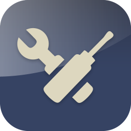

A revolução do Google está chegando!
Glass > Especificações
Raio-X no Google Glass
por Gustavo Guanabara
Atualizado em 01/Maio/2013
Clique sobre área destacada da imagem para ter mais informações sobre os recursos do Google Glass. Qualquer ponto vermelho vai te levar a um lugar cheio de novas informações.